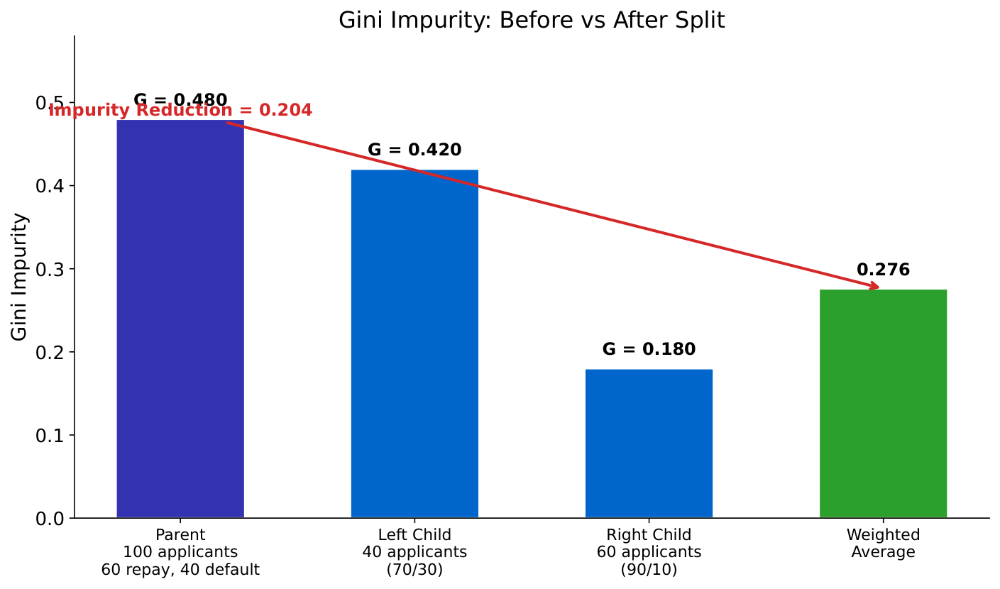
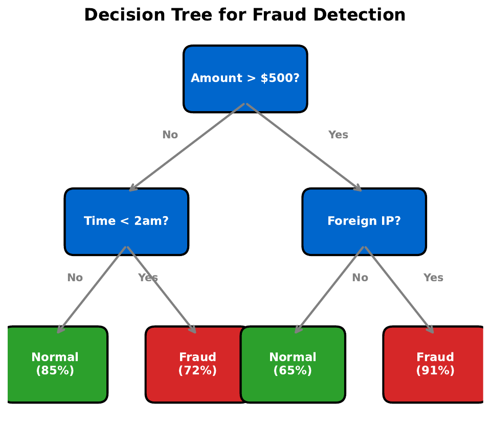
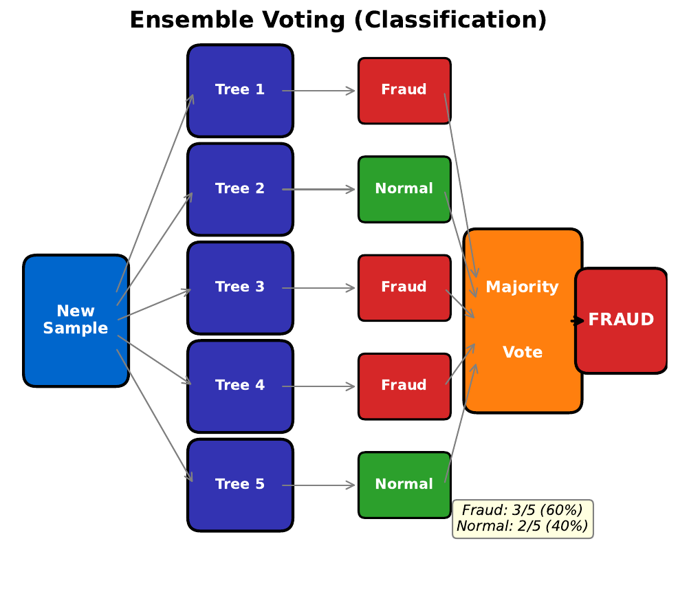
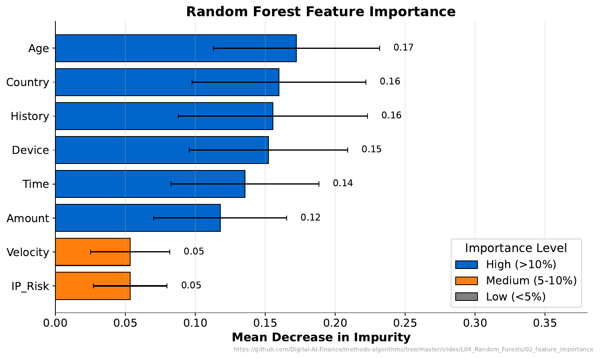
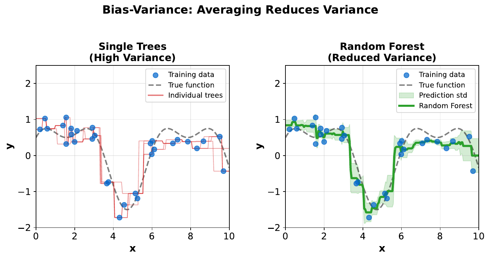

"20 Questions for Fraud"
| Amount | Merchant | Time | Foreign | Outcome |
|---|---|---|---|---|
| $15 | grocery | 10am | No | Legit |
| $800 | electronics | 2am | Yes | Fraud |
| $25 | cafe | 9am | No | Legit |
| $2500 | jewelry | 3am | Yes | Fraud |
| $10 | grocery | 11am | No | Legit |
| $950 | electronics | 1pm | No | Legit |
| $5 | cafe | 8am | No | Legit |
| $3200 | online | 4am | Yes | Fraud |
Your Task
- What is the single best yes/no question to separate fraud from legit?
- After that split, ask a second question for each group.
- Draw your question tree on paper.
Reveal Solution
You just built a decision tree! Good first questions: "Is it foreign?" or "Is the amount > $500?" or "Is the time between midnight and 5am?" Decision trees split data recursively using the question that best separates the classes.
"Which Split Is Better?"

Your Task
- Which split creates purer groups?
- In the left split, what fraction of each group is fraud?
- Why is a 90/10 split better than a 60/40 split?
Reveal Solution
Gini impurity measures how mixed a group is: $G = 1 - \sum p_i^2$. A pure group (all one class) has $G=0$. A 50/50 mix has $G=0.5$ (worst). The algorithm picks the split that reduces Gini the most -- this is information gain.
"One Tree vs. Many Trees"

Your Task
- If you trained this tree on slightly different data, would the splits change?
- Would the predictions change?
- How could you make the predictions more stable?
Reveal Solution
A single tree is unstable -- small data changes cause big tree changes (high variance). Solution: train many trees on slightly different data and let them vote. This is the key insight behind Random Forests: a committee of diverse trees is more reliable than any single tree.
"Voting Committee"

Your Task
- If 7 out of 10 classifiers say "fraud," what do you conclude?
- Why is a committee better than one expert?
- What if all 10 experts were trained on the exact same data?
Reveal Solution
Ensemble voting reduces errors: even if individual trees are wrong 40% of the time, a majority vote of 10 trees is wrong far less often (by the law of large numbers). But trees must be diverse -- if trained identically, they make the same mistakes. Bootstrap sampling (random subsets with replacement) creates diversity.
"Which Feature Matters?"

Your Task
- Which feature is most important for prediction?
- Does "important" mean "causal"?
- If you removed the top feature, what would happen to model accuracy?
Reveal Solution
Feature importance measures how much each feature reduces impurity across all trees. But importance does not equal causation -- a feature can be important because it's correlated with the true cause. Removing the top feature usually hurts accuracy, but other correlated features may partially compensate.
"Overfitting the Fraud Detector"

Your Task
- What happens when a single tree is very deep?
- What happens when it's very shallow?
- How does a random forest fix this problem?
Reveal Solution
Deep trees overfit (memorize noise). Shallow trees underfit (miss patterns). Random forests fix this: each tree can be deep (low bias), but averaging many trees reduces variance. The formula: $\text{Var}(\bar{X}) = \frac{\sigma^2}{n}$ -- averaging $n$ independent estimates reduces variance by $n$.